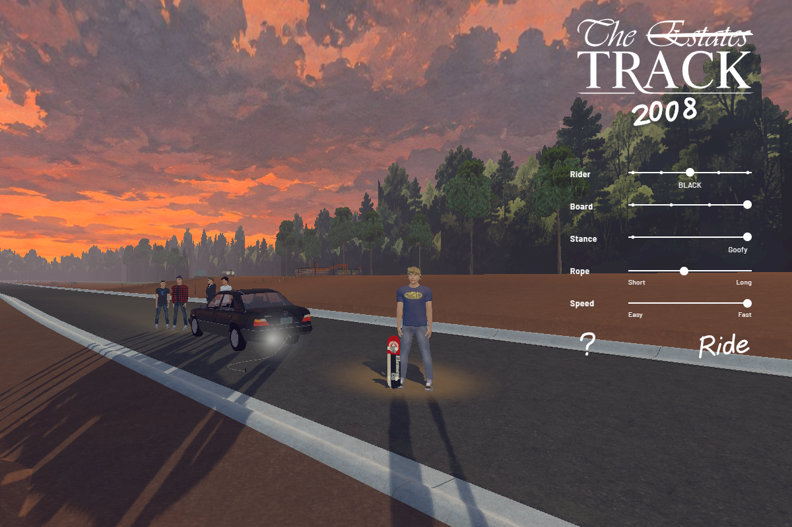
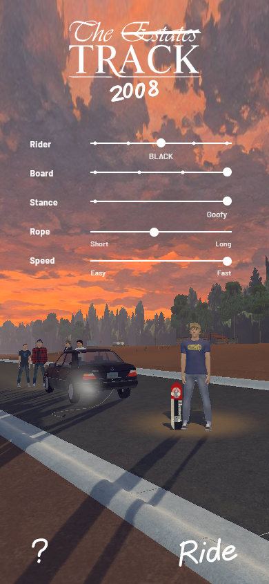
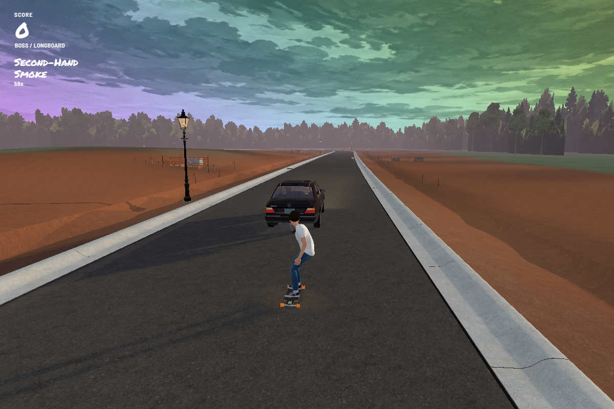

Build 167 · Room to ride
Play Build 167 →
The gathering
The selected rider stands farther forward in the camera's view, on the asphalt and clear of the exhaust. The car and friends remain behind them.


Boss's rainbow minute
Collect 50 distinct smoke puffs in a run. Boss stays on the rope with normal gravity and cannot wipe out for 60 seconds. The rainbow sky radiates and pulses twice as fast, then fades back to normal. Only Boss can earn Second-Hand Smoke; he cannot collect Secret Spliff.
